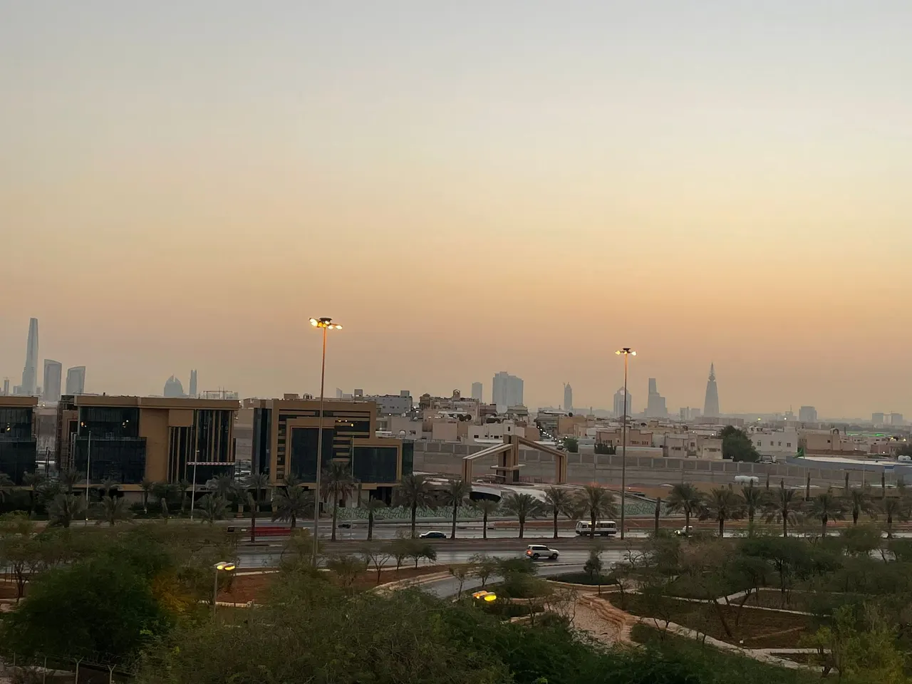

Defesa Civil da Arábia Saudita encerra alerta em Riad após novos ataques houthis
Autoridades declararam que o perigo havia passado na capital nesta segunda-feira; no domingo, destroços de um ataque interceptado atingiram prédio da Aramco, sem vítimas.

O que aconteceu
A Defesa Civil da Arábia Saudita informou nesta segunda-feira, 9 de novembro de 2026, que o perigo havia passado na cidade de Riad, pouco depois de emitir um alerta de possível ameaça. A informação foi noticiada pela Reuters e pelo jornal saudita Arab News. O órgão pediu à população que continuasse seguindo as orientações de segurança e evitasse aglomerações e gravações em locais sob risco. A advertência ocorre um dia após a interceptação de mísseis e drones lançados pelos houthis do Iêmen contra áreas da Arábia Saudita. No domingo, 8 de novembro, fragmentos de um ataque interceptado danificaram janelas de andares de um edifício da companhia petrolífera Aramco, no distrito financeiro de Riad. Segundo o Ministério da Energia saudita, os danos foram limitados e não houve mortos nem feridos nesse episódio. As autoridades sauditas informaram que sistemas de defesa aérea interceptaram projéteis em direção à capital e a outras regiões. Os houthis reivindicaram ataques, mas as versões sobre alvos e resultados devem ser atribuídas às respectivas partes.
Análise do Corvo
A emissão de alertas e a rápida comunicação de que o perigo passou mostram a importância de instruções oficiais em situações de ameaça aérea. Mesmo quando os projéteis são interceptados, os fragmentos podem atingir edifícios e colocar civis em risco, como ocorreu no incidente da Aramco. A continuidade dos lançamentos amplia a instabilidade regional e pode pressionar a segurança de infraestruturas econômicas e energéticas. Não há, porém, fundamento para afirmar que o alerta encerrado nesta segunda-feira signifique o fim da escalada ou que novos ataques sejam inevitáveis.
Contraponto
O encerramento do alerta é uma informação pontual sobre a situação de segurança comunicada pela Defesa Civil, não uma declaração de cessar-fogo. Os relatos sobre autoria e alvos dos ataques são atribuídos às autoridades sauditas e aos houthis; a apuração independente dos detalhes militares é limitada. A fotografia que acompanha a reportagem é uma imagem de arquivo da cidade de Riad feita em abril de 2022, sem relação visual direta com o ataque.